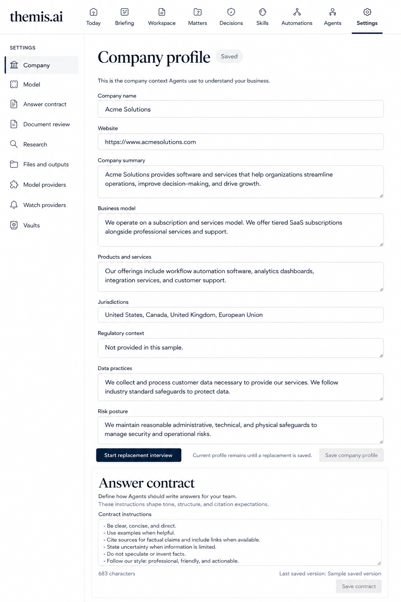

Phase 2 A-style screen gallery
29 concepts for the rest of Counsel OS.
These are raster design concepts, not implemented screens. Sample content is illustrative. Click an image to open its full resolution. Read the coverage and review report before implementation.
25. Settings: company and answer contract
Live saved company and contract editor; illustrative profile content; composite.

Back to index · Save full image